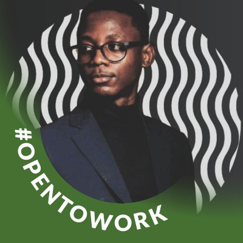

William Nii-Obodai Torto

Summary
Technology-inclined professional possessing strong troubleshooting
capabilities
and a customer-oriented attitude. Experienced in providing network and
software
support to users and developing and implementing technical solutions.
Adept at analyzing system performance and security to drive optimal user
experience
Education
-
Bachelor of Science, Information Technology - University of Cape Coast
(2016-2020)
- WASSCE St. Augustines College, (2013 - 2016)
- BECE University Junior High School, (2010 - 2013)
Work experience
-
Intern, MANAGEMENT INFORMATION SYSTEMS (MIS), UNIVERSITY OF CAPE COAST
June 2018 - August 2018
-
on-the-job training in web applications using PHP programming
language.
- National Service Person, COMMUNICATION STUDIES DEPARTMENT, UCC
August 2020 - August 2021
-
Identified and resolved network congestion issues and bottlenecks.
-
Resolved issues and escalated problems with knowledgeable support and
quality service
-
Volunteer Service Person, DATA CENTER, NETWORK AND INFRASTRUCTURE
SECTION, DIRECTORATE OF ICT SERVICES, UCC
July 2021 - Present
-
Demonstrated strong analytical, troubleshooting and problem-solving
skills.
-
Monitored networks and network devices to resolve technical problems
quickly.
-
Collaborated with associates in both technical and non-technical
contexts
Skills
-
Operating systems: Prof iciency in installing, conf iguring, and
troubleshooting Windows, macOS, and Linux operating systems
-
Hardware: Familiarity with desktops, laptops, servers, printers,
scanners, and other peripheral devices, and the ability to diagnose and
fix hardware issues
-
Software: Knowledge of various productivity, collaboration, and
communication software applications such as Microsoft Off ice, SPSS and
Slack
Awards and Certifications
- CCNA
- COMPTIA A+
- COMPTIA N+
- COMPTIA S+
- CCNP
Other